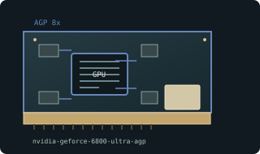

[ AGP-ERA GRAPHICS CARDS // IDENTIFIED COMPONENT ]
NVIDIA GeForce 6800 Ultra 256 MB AGP
NV40 enthusiast GPU, 2004. This entry identifies one specific product configuration; closely named models and partner-board variants are distinguished below.

MODEL IDENTIFICATION: This is AGP NV40 board, not distinct PCI Express 6800 Ultra with bridge. Partner layouts and power sockets vary. Card is long, dual-slot, and high-draw for its era.
Recorded specifications
| Cataloged product | NVIDIA GeForce 6800 Ultra 256 MB AGP |
|---|---|
| Generation / chip | NV40 enthusiast GPU, 2004 |
| Core & memory | NV40; 16 pixel pipelines and 6 vertex units; 256 MB GDDR3; 256-bit memory bus; 400 MHz core and 550 MHz (1.1 GHz effective) memory reference clocks. |
| Host interface & I/O | AGP 8x; dual DVI-I reference outputs; two 4-pin peripheral auxiliary-power connectors on AGP reference design. |
| Variant boundary | This is AGP NV40 board, not distinct PCI Express 6800 Ultra with bridge. Partner layouts and power sockets vary. Card is long, dual-slot, and high-draw for its era. |
| Archive record | Photograph label and PCB revision; record BIOS, driver version, adapters, physical condition, and source-document revision used to verify specimen. |
Compatibility & service notes
Reference AGP board specifies 256 MB GDDR3 and two auxiliary inputs; verify label and PCB.
Verify both auxiliary power leads and case clearance. Inspect cooler and capacitors; preserve exact AGP BIOS. Do not substitute PCIe 6800 Ultra or 6800 GT.
- Check slot signaling, keying, lane width, auxiliary power, clearance, and PSU requirements; physical insertion alone does not prove compatibility.
- Use drivers supporting this device ID and OS release. Preserve original driver/firmware before updates and record source.
- Do not energize cards with cracks, corrosion, damaged power sockets, obstructed fans, or suspected shorts; inspect before bench testing.
Manufacturer & standards sources
- NVIDIA legacy product / driver archiveUse alongside the exact board label and revision; archived family data may not describe every OEM implementation.
- Intel AGP specification archiveUse alongside the exact board label and revision; archived family data may not describe every OEM implementation.
- GeForce 6800 Ultra AGP specificationsUse alongside the exact board label and revision; archived family data may not describe every OEM implementation.
- Retro_GPU_Universe — nVIDIA GeForce 6800 Ultra 256 MB GDDR3 AGP by Inno3DIndependent video review; treat as supplementary context, not primary manufacturer documentation.
Specifications describe the cataloged reference configuration only. Manufacturer manuals and physical product label take precedence for a specific OEM revision.